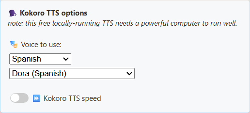
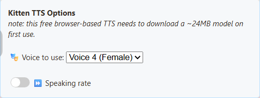
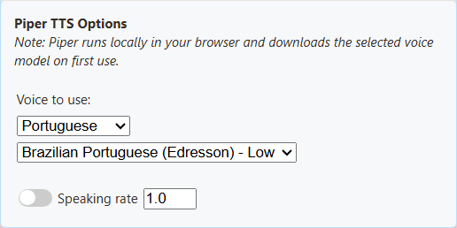
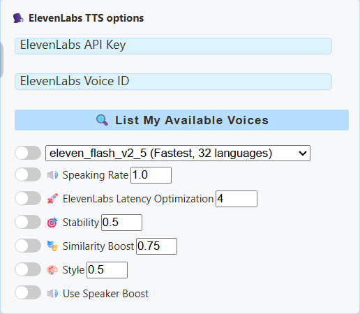
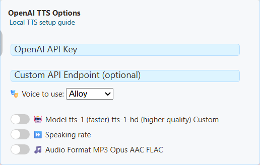

1. Zapněte čtení chatu
Ještě nemáte připojený chat? Začněte zde: nainstalujte SSN, přidejte zdroj a otevřete dok.
Otevřete Vyskakovací okno rozšíření SSN nebo v desktopové aplikaci „Zdroje a nastavení“.
V části Hlavní překryv chatu a ovládací dok (Main chat overlay & control dock), rozbalte Zpráva — převod textu na řeč (Message — Text to Speech). Zapněte přepínač zobrazený zde:

2. Vyberte bezplatný hlas
Ve stejné části přejděte dolů na Poskytovatel TTS (TTS Service Provider). Vyberte Piper TTS, poté hlas.

Použijte kopírovat odkaz vedle Hlavní překryv chatu a ovládací dok (Main chat overlay & control dock) pro získání aktualizovaného odkazu.
3. Přehrávejte ho v OBS
- Přidejte v OBS Zdroj prohlížeče (Browser Source) a vložte tento odkaz.
- Zapněte Ovládat zvuk přes OBS (Control audio via OBS) v jeho vlastnostech.
- Odešlete zprávu do chatu. Zkontrolujte měřič zvuku zdroje a poté pořiďte krátkou nahrávku.
Chcete si to poslechnout? V Pokročilých vlastnostech zvuku OBS vyberte Monitorovat a odesílat (Monitor and Output) pro tento zdroj. Nechte chat číst pouze jednu instanci.
Poslechněte si bezplatné hlasy
Chcete jiný zvuk? Tyto čtyři hlasy jsou zdarma. Porovnejte je přehráním.
Piper
Americká angličtina, ženský hlas (HFC), střední kvalita.en_US-hfc_female-medium
Španělské a portugalské ukázky
V nastavení SSN vyberte jazyk nad seznamem hlasů, poté použijte Test. Piper nabízí Španělsko, Mexiko, Brazílii a Portugalsko; Kokoro přidává tři španělské a tři brazilské portugalské hlasy.
Piper - španělština (Španělsko)
DaveFX
Kokoro - španělština
Dora
Piper - portugalština (Brazílie)
Faber
Kokoro - portugalština (Brazílie)
Dora
Bezplatná místní syntéza s úvodním stažením. Ukázky neobsahují dobu načítání. Piper je méně náročný výchozí bod; Kokoro může být na CPU pomalé. Pokud řeč zaostává za chatem, použijte Piper.
Text ukázek a podrobnosti testu
Čtyři anglické ukázky čtou: Vítejte na streamu! Díky, že jste se připojili. Kterou hru si zahrajeme příště? Čtení jmen je vypnuté.
Ověřeno 7. září 2026 v OBS 32.2.2 na Windows 11: zpráva chatu dorazila do skutečného doku, vygenerovala řeč, rozhýbala měřič zdroje prohlížeče a objevila se v nahrávce. Kokoro v tomto testu na CPU začalo mluvit znatelně později. Tyto ukázky předvádějí hlas, nikoli dobu čekání.
System TTS na tomto počítači nabídl pět hlasů, ale v nahrávce zdroje prohlížeče nevytvořil žádný zvuk. Výsledek platí pro toto konkrétní nastavení; vždy otestujte výslednou URL a nahrávku. Cloudové hlasy nejsou zahrnuté, protože nebyly použity placené přihlašovací údaje.
Potřebujete pomoc?
Podporuje moje chatovací platforma TTS?
Pokud SSN přijímá chat jako text, může ho číst nahlas. YouTube, Twitch, TikTok i další zdroje používají stejnou funkci. Vaše chatovací platforma nepotřebuje vlastní podporu TTS.
Žádná řeč?
Ověřte, že dok přijímá chat, a poté zkontrolujte přepínač TTS, poskytovatele a filtry. Použijte nově zkopírovaný odkaz. Nechte dokončit první stažení modelu.
Funguje v Chrome/Edge, ale ne v OBS?
OBS má samostatný prohlížeč a seznam hlasů. System TTS tam nemusí fungovat, i když hlasy vypisuje. Zkuste Piper, Kokoro, Kitten nebo eSpeak. Virtuální zvukový kabel chybějící řeč nevyřeší.
Měřič se pohybuje, ale nahrávka je tichá?
Zkontrolujte ztlumení a přiřazení záznamových stop v OBS. Pokud chcete zvuk také slyšet, použijte Monitor and Output; tento monitorovací výstup nezachytávejte podruhé. Průvodce zvukem v OBS.
Mohu místo toho použít dok OBS nebo vybrané zprávy?
Vlastní dok prohlížeče v OBS je ovládací panel, nikoli zdroj prohlížeče ve scéně použitý výše. Pro vybrané zprávy zapněte TTS ve vlastních možnostech příslušného překryvu ve vyskakovacím okně a zkopírujte jeho odkaz. Nechte mluvit jen jednu stránku, aby se hlasy nezdvojovaly.
Porovnání všech poskytovatelů: požadavky, cena a kompromisy
Začněte s Piper pro bezplatný místní hlas, nebo porovnejte Kokoro, pokud vám jeho zvuk vyhovuje více. Zkuste eSpeak, pokud je rychlá odezva důležitější než přirozenost. Kitten je další kompaktní anglická možnost. Před rozhodnutím si hlasy poslechněte.
| Poskytovatel | Hodí se pro | Kompromis | Požadavky / cena |
|---|---|---|---|
| Kokoro | Anglické, španělské a brazilské portugalské hlasy. | Vyšší zatížení CPU; první promluva může začít pomalu. | Zdarma, bez klíče. Stahuje soubory modelu/hlasů; CPU nebo podporované WebGPU. |
| Piper | Místní neuronové hlasy; možnosti pro angličtinu, španělštinu a portugalštinu. | Kvalita a výslovnost se liší podle hlasu. | Zdarma, bez klíče. Stahuje vybraný model (HFC medium: přibližně 63 MB) a soubory systému. |
| Kitten | Kompaktní anglický model s osmi hlasy. | Méně jazyků a stylů hlasu. | Zdarma, bez klíče. Aktuální přibalený model: přibližně 24 MB plus soubory systému/hlasů; CPU. |
| eSpeak | Nenáročné, mnoho jazyků, rychlé spuštění. | Záměrně syntetický/robotický zvuk. | Zdarma, bez klíče. Načítá přibalené soubory systému/jazyků; nevyžaduje neuronový model ani GPU. |
| Systémové TTS | Používá hlasy dostupné v prohlížeči nebo desktopové aplikaci. | Seznam hlasů a zachytávání v OBS se liší; některé hlasy vyžadují internet. | SSN neúčtuje poplatek za poskytovatele. Vyžaduje funkční hlas systému/prohlížeče; testujte na skutečné stránce přehrávání. |
| ElevenLabs | ID hlasů, výběr modelu a ovládání stability/stylu. | Mohou se uplatnit limity účtu, síťové zpoždění a poplatky za API. | Internet, API klíč a dostupné ID hlasu. Text chatu se odesílá poskytovateli. |
| Google Cloud | Pojmenované hlasy a ovládání jazyka, rychlosti a výšky. | Ne každý hlas podporuje všechny ovládací prvky. | Internet, zapnuté Cloud TTS API, API klíč a odpovídající hlas/jazyk. Platí účtování a kvóty. |
| Gemini | Styly hlasů a písemné pokyny k přednesu. | Předběžné modely a kvóty se mohou měnit; latence se liší. | Internet, API klíč Gemini a přístup k vybranému modelu TTS. Zkontrolujte limity a účtování účtu. |
| Speechify | ID hlasu s ovládáním rychlosti, jazyka a modelu. | Vyžaduje přístup k API; dostupné hlasy závisí na účtu. | Internet a API klíč Speechify. Platí podmínky a limity používání API. |
| OpenAI | Pojmenované hlasy s ovládáním modelu a formátu. | Vyžaduje internet a účtování API; předplatné účtu je samostatné. | API klíč s přístupem k TTS. Text chatu se odesílá na nastavený koncový bod. |
| Vlastní / místní | Použijte vlastní kompatibilní hlasový server. | Nejnáročnější nastavení: koncový bod, model, hlas a přístup z prohlížeče musí být v souladu. | Dostupný koncový bod řeči kompatibilní s OpenAI; případně klíč. Náklady na místní hardware či hosting se liší. |
Výše uvedené velikosti ke stažení se týkají souborů modelů, nikoli celkové spotřeby paměti ani všech potřebných součástí. Místní poskytovatelé používají počítač, na kterém běží dok/překryv; první spuštění může být pomalejší a OBS má vlastní mezipaměť. Cloudoví poskytovatelé šetří místní výkon, ale odesílají text mimo zařízení.
OBS: čtyři níže uvedení místní poskytovatelé prošli testy nahrávání zdroje prohlížeče. Cloudoví/vlastní poskytovatelé vracejí zvuk pro přehrání stránkou, ale v tomto přehledu nebyli testováni s živými účty. System TTS vyžaduje samostatný test, i když vypisuje hlasy.
Background generation and streamed playback
Under Kokoro or Kitten, open Generation and playback. For Kokoro, choose Background generation processing. For Kitten, choose a Kitten 0.8 model. These options generate speech in a background worker to keep the page responsive.
Play complete message generates the whole message before playing it. Start as speech arrives plays each sentence or short section as it finishes generating. This can start sooner, but slower computers may leave gaps between sections. Choose complete playback if those gaps are distracting. NeuroSync receives the complete audio file.
Kokoro's Automatické processor uses a supported GPU when available and falls back to CPU. Automatic quality uses FP16 on compatible GPUs, full precision on other supported GPUs, and the compact model on CPU. Choose CPU if GPU playback fails, or Full quality for FP32. Full quality downloads a larger model and uses more memory. Explicit GPU selection reports an error if unavailable.
Kitten 0.8 runs on CPU and provides English voices. Nano is the smallest download; Micro and Mini offer alternative models to compare with the same voice controls. Each model downloads on first use. The browser or OBS instance playing speech keeps its own cache.
Existing links keep their original processing unless these options are selected. For a URL, use &kokororuntime=worker with optional &kokoroplayback=stream, nebo &kittenmodel=nano (also micro nebo mini) with optional &kittenplayback=stream. Kokoro also accepts &kokorodevice=wasm nebo webgpu a &kokorodtype=q8, fp16 nebo fp32. Streamed playback or FP32 automatically enables Kokoro background processing.
Nastavení poskytovatelů a názvy hlasů
Skutečné nastavení desktopové aplikace pořízené s novým profilem. Otevřete požadovaného poskytovatele; pole API klíčů jsou záměrně prázdná. Tyto ovládací prvky nastavují vybraný dok nebo překryv SSN. Kliknutím na snímek ho zobrazíte v plné velikosti.
Systémové TTS
Seznam jazyků je v tomto novém profilu prázdný. Dostupné hlasy závisejí na prohlížeči/aplikaci a nainstalovaných hlasech; univerzální seznam hlasů SSN neexistuje.

Kokoro
Vyberte hlas v SSN; model se načte na stránce, která mluví. Nabídka zahrnuje americkou a britskou angličtinu, španělštinu a brazilskou portugalštinu. Hlasy hledejte pomocí filtru jazyka; Test přehraje krátkou frázi ve vybraném jazyce. Pro nižší zatížení CPU zkuste Piper.


Názvy hlasů a hodnoty URL
- Heart (americký ženský hlas) —
af_heart - Alloy (americký ženský hlas) —
af_alloy - Aoede (americký ženský hlas) —
af_aoede - Bella (americký ženský hlas) —
af_bella - Jessica (americký ženský hlas) —
af_jessica - Kore (americký ženský hlas) —
af_kore - Nicole (americký ženský hlas) —
af_nicole - Nova (americký ženský hlas) —
af_nova - River (americký ženský hlas) —
af_river - Sarah (americký ženský hlas) —
af_sarah - Sky (americký ženský hlas) —
af_sky - Adam (americký mužský hlas) —
am_adam - Echo (americký mužský hlas) —
am_echo - Eric (americký mužský hlas) —
am_eric - Fenrir (americký mužský hlas) —
am_fenrir - Liam (americký mužský hlas) —
am_liam - Michael (americký mužský hlas) —
am_michael - Onyx (americký mužský hlas) —
am_onyx - Puck (americký mužský hlas) —
am_puck - Santa (americký mužský hlas) —
am_santa - Emma (britský ženský hlas) —
bf_emma - Isabella (britský ženský hlas) —
bf_isabella - George (britský mužský hlas) —
bm_george - Lewis (britský mužský hlas) —
bm_lewis - Alice (britský ženský hlas) —
bf_alice - Lily (britský ženský hlas) —
bf_lily - Daniel (britský mužský hlas) —
bm_daniel - Fable (britský mužský hlas) —
bm_fable - Dora (španělština) -
ef_dora - Alex (španělština) -
em_alex - Santa (španělština) -
em_santa - Dora (brazilská portugalština) -
pf_dora - Alex (brazilská portugalština) -
pm_alex - Santa (brazilská portugalština) -
pm_santa
Kitten
Osm anglických hlasů: mužské a ženské varianty očíslované 2, 3, 4 a 5. Ukázka používá Voice 4 (Female).


Názvy hlasů a hodnoty URL
- Hlas 2 (mužský) —
expr-voice-2-m - Hlas 2 (ženský) —
expr-voice-2-f - Hlas 3 (mužský) —
expr-voice-3-m - Hlas 3 (ženský) —
expr-voice-3-f - Hlas 4 (mužský) —
expr-voice-4-m - Hlas 4 (ženský) —
expr-voice-4-f - Hlas 5 (mužský) —
expr-voice-5-m - Hlas 5 (ženský) —
expr-voice-5-f
Piper
Vyberte odpovídající jazyk a model. Ukázka používá HFC medium. Samotné nastavení jazyka hlas nepřekládá.


Názvy hlasů a hodnoty URL
- Americká angličtina, ženský hlas (HFC) - střední kvalita —
en_US-hfc_female-medium - Španělština, Španělsko (DaveFX) - střední kvalita —
es_ES-davefx-medium - Španělština, Mexiko (Ald) - střední kvalita —
es_MX-ald-medium - Brazilská portugalština (Faber) - střední kvalita —
pt_BR-faber-medium - Brazilská portugalština (Edresson) - nízká kvalita —
pt_BR-edresson-low - Portugalština, Portugalsko (Tugao) - střední kvalita —
pt_PT-tugão-medium
eSpeak
Vyberte hlas pro daný jazyk a případně upravte rychlost řeči. Tento systém záměrně zní roboticky.

Názvy hlasů a hodnoty URL
- Angličtina —
en - Španělština —
es - Portugalština, Brazílie —
pt-br - Portugalština, Portugalsko —
pt-pt
ElevenLabs
Zadejte API klíč a pomocí List My Available Voices vyhledejte ID hlasu dostupného pro váš účet. Přehled poskytovatelů.


Google Cloud
Zadejte API klíč Google Cloud TTS a přesný název hlasu s odpovídajícím jazykem. Názvy hlasů a podporované ovládací prvky.

Gemini
Vyberte podporovaný model TTS a hlas; pokyny ke stylu mění přednes. Jde o nastavení Gemini API, oddělené od Google Cloud TTS. Ukázky hlasů a požadavky.

Fish Audio
Vyberte Fish Audio v nabídce poskytovatelů TTS pro dok chatu, překryv vybraných zpráv, stránku TTS nebo Flow Actions. Zadejte vlastní API klíč Fish Audio, poté použijte stávající tlačítko Test TTS. Volitelné Voice ID vybírá hlas z Fish Audio; zkopírujte ID hlasového modelu, nikoli jeho název nebo URL stránky. Ponechte prázdné pro výchozí hlas služby.
Pokročilé možnosti zahrnují model a rychlost řeči (0.5–2). Výchozí hodnota SSN je s2.1-pro-free; dostupnost bezplatné úrovně a podmínky přiměřeného používání určuje Fish Audio. Placené modely vyžadují kredit na účtu. SSN po selhání bezplatného požadavku nepřejde na placený model. Hlasitost pro diváky nastavte v More TTS options. Text se odesílá do Fish Audio a jazyk rozpoznává služba.
Nastavení OBS / prohlížeče: Spusťte stávající místní most TTS v režimu Fish na počítači s OBS. Nastavte proměnnou prostředí SSN_TTS_TARGET_BEARER na svůj API klíč Fish a spusťte node scripts/local-tts-bridge.cjs --mode fish. V panelu Fish Audio nastavte URL mostu pro OBS / prohlížeč na http://127.0.0.1:8124/v1/audio/speech; vložte token místního mostu vypsaný v terminálu do pole ve vyskakovacím okně Klíč API . Token se po restartu mění, pokud nenastavíte SSN_TTS_BRIDGE_TOKEN na dlouhou náhodnou tajnou hodnotu; odkazy překryvů obsahující token uchovávejte v soukromí. Nechte most běžet, otestujte hlas a použijte vygenerovanou URL překryvu v OBS. Pokud chcete jeho zvuk v mixéru OBS, zapněte v nastavení zdroje prohlížeče Control audio via OBS. Přímé požadavky Fish z hostovaných stránek prohlížeče nemají oprávnění CORS; most poskytuje zvukovou odpověď dostupnou prohlížeči.
S mostem přidejte &fishendpoint=http%3A%2F%2F127.0.0.1%3A8124%2Fv1%2Faudio%2Fspeech do URL a vynechte fishkey pokud klíč uchovává most.
Parametry URL: &ttsprovider=fish&fishkey=YOUR_KEY&voicefish=VOICE_ID&fishmodel=s2.1-pro-free&fishspeed=1. Zapněte TTS obvyklými ovládacími prvky. Vygenerované URL obsahující váš klíč uchovávejte v soukromí. Stávající přepsání hlasu v akci Speak Text v Event Flow přijímá ID hlasu Fish, pokud přijímající stránka používá Fish Audio.
Dokumentace API Fish Audio · Oznámení bezplatného modelu a podmínky
Speechify
Průvodce Speechify krok za krokem: API klíč, hlasy, rychlost a hlasitost pro diváky.
Zadejte API klíč a ID hlasu ze svého účtu Speechify API. Nastavení poskytovatele.

OpenAI
Vyberte podporovaný hlas/model a zadejte API klíč. Předplatné ChatGPT neposkytuje API kredity. Pro OpenAI ponechte výchozí koncový bod.


Vlastní / místní TTS
Tato možnost znovu používá ovládací prvky kompatibilní s OpenAI, takže nadpis stále uvádí OpenAI. Zadejte koncový bod serveru a jím podporovaný hlas/model; ověřování závisí na vašem serveru. Viz průvodce místním serverem.

Pokročilé: ruční úprava URL TTS
Vhodné první zkoušky:
dock.html?session=YOUR_SESSION&speech=en-US&ttsprovider=kokoro
dock.html?session=YOUR_SESSION&speech=en-US&ttsprovider=piper
dock.html?session=YOUR_SESSION&speech=en-US&ttsprovider=kitten
Pro portugalštinu nebo španělštinu začněte raději jednou z těchto možností:
dock.html?session=YOUR_SESSION&speech=pt-BR&ttsprovider=piper&pipervoice=pt_BR-faber-medium
dock.html?session=YOUR_SESSION&speech=pt-BR&ttsprovider=espeak&espeakvoice=pt-br
dock.html?session=YOUR_SESSION&speech=es-ES&ttsprovider=piper&pipervoice=es_ES-davefx-medium
dock.html?session=YOUR_SESSION&speech=es-ES&ttsprovider=espeak&espeakvoice=es
Úplná referenční příručka TTS · Průvodce místním serverem TTS
Pokročilé: vlastní místní server TTS
Místní server TTS se hodí, pokud chcete soukromé hlasy, konkrétní hlasový model nebo server jako Kokoro-FastAPI či openedai-speech. Stránka přehrávající TTS musí mít přístup ke koncovému bodu.

dock.html?session=YOUR_SESSION&speech=en-US&ttsprovider=customtts&openaiendpoint=http://127.0.0.1:8124/v1/audio/speech&voiceopenai=af_bella
localhost znamená počítač, na kterém stránka běží. Pokud server TTS běží na jiném počítači, použijte jeho IP adresu v místní síti nebo spusťte most na počítači s OBS.